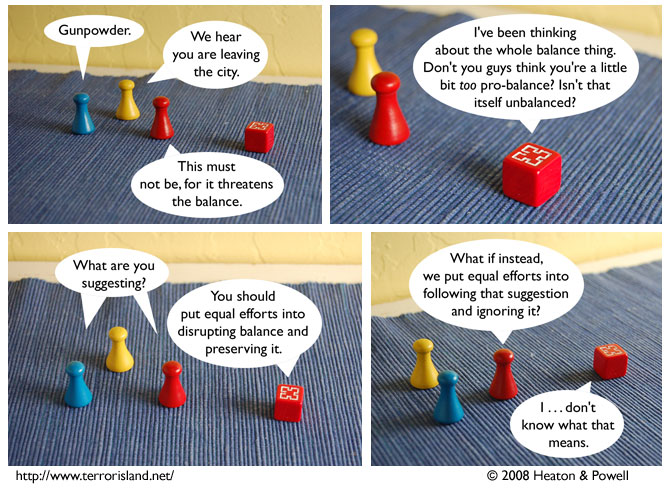

Strip #264
— Monday, February 18, 2008
Alternate ending: the Unity’s heads explode after panel 2
Notes, Thoughts, &c.
Ben’s Notes
I’ve started reading Chaos Pet, a stick-figure webcomic with some philosophy humor. It has strips about my two favorite philosophical concepts to annoy Lewis with: philosophical zombies and dialetheism.
Dialetheism is the idea that contradictions are sometimes true, and that this isn’t as much of a problem as those stuffy classical logicians think. You might be thinking that’s crazy, and it is. But also, it’s not.
Lewis’s Notes
Most people forget that they should be trialetheists. Allowing some statements to have three truth values, that is, for there to be statements that are true, false and delicious all at the same time.